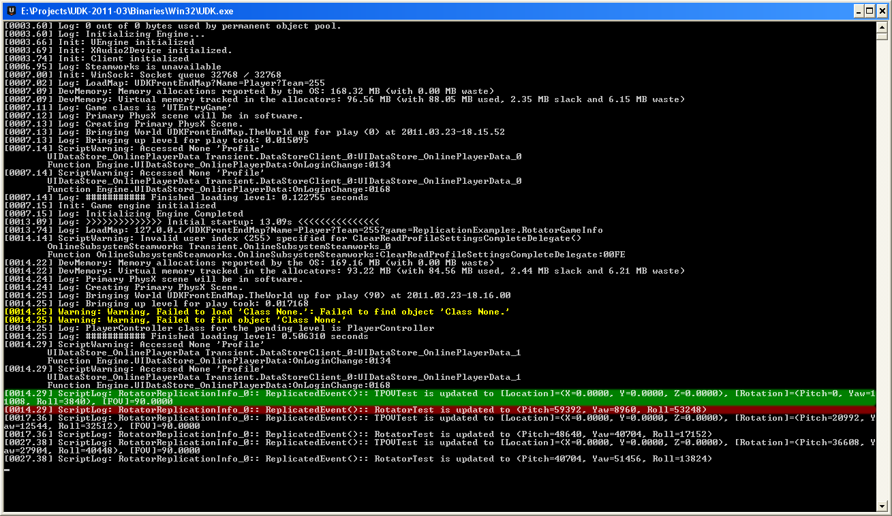

UDN
Search public documentation:
ReplicationVariableReplicationNotesCH
English Translation
日本語訳
한국어
Interested in the Unreal Engine?
Visit the Unreal Technology site.
Looking for jobs and company info?
Check out the Epic games site.
Questions about support via UDN?
Contact the UDN Staff
日本語訳
한국어
Interested in the Unreal Engine?
Visit the Unreal Technology site.
Looking for jobs and company info?
Check out the Epic games site.
Questions about support via UDN?
Contact the UDN Staff
最后一次测试是在2011年3月份的UDK版本上进行的。
变量复制注意事项
概述
当在您的游戏中处理变量复制时应该遵守一些特殊规则。
向量
当通过网络发送向量时发送的是三个向上取整的带符号整数。复制的向量仅能位于(X=-1048576.f, Y=-1048576.f, Z=-1048576.f)到(X=1048575.f, Y=1048575.f, Z=1048575.f)范围之内。高于这个范围和低于该范围的值都会在发送时被区间限定到这个范围之内。 如果需要更高的精度或更大的范围，那么您将需要创建自己的包含3个浮点数的结构体或者单独地发送每个分量。
向量复制测试
这是当服务器复制修改后的值到客户端时客户端所接受到的数据。正如您可以看到的，向量 (Vector; Red)失去了它们的小数部分。同时其他结构体中使用的向量(TwoVectors; Green)也出现了同样的行为。类似于向量(Vector4; Yellow, Vector2D; Blue)的结构体没有像向量那样进行压缩，所以它们以全精度进行发送，并且具有标准的32位范围。 这是服务器发送给所有客户端的数据。
这是服务器发送给所有客户端的数据。

旋转量
旋转量(Rotator)在网络上是作为无符号字节发送的。因此传送的最小单位是256个虚幻单位的旋转量或1.406250度或0.024543弧度。尽管失去了一些精度，但差异如此小以至于不会被察觉。 每个分量的计算是作为 replicated_component = (component >> 8) & 255 来完成的。这将会把任何值，无论正值或负值，转换为0到255之间的值。在接收端，它是作为 component = (replicated_component << 8) 来计算的完成的。 如果需要更高的精度，那么您将需要创建自己的包含3个整数的结构体或者单独地发送每个分量。
旋转量复制测试
这是当服务器复制修改后的值到客户端时客户端所接受到的数据。正如您看到的，旋转量分量经过上述的变换，然后进行发送。当客户端接收到复制的值时，会在客户端上进行变换该值。
这是服务器发送给所有客户端的数据。让我们仔细检查核实一下旋转量测试：- RotatorTest.Pitch
- 59467 >> 8 == 232
- 232 & 255 == 232
- 232 << 8 == 59392
- RotatorTest.Yaw
- 9170 >> 8 == 35
- 35 & 255 == 35
- 35 << 8 == 8960
- RotatorTest.Roll
- -12242 >> 8 == -48
- -48 & 255 == 208
- 208 << 8 == 53248

Structs(结构体)
结构体在网络上是一遍就发送完成的。和向量及旋转量不同，它们不会以任何其他方式进行特殊的压缩。结构体是或者一次性全部发送或者不发送。因此，更新结构体的一个单独的分量然后仅发送该分量的改变是不可能的。但是，仍然可以通过发送单独的变量然后把它们在结构体中组合到一起来手动地完成该实现的。因此，一旦当复制大的结构体时要小心。
结构体复制测试
这是当服务器复制修改后的值到客户端时客户端所接受到的数据。正如您看到的，所有的变量都是一次性更新的。 这是服务器发送给所有客户端的数据。
这是服务器发送给所有客户端的数据。

静态数组
静态数组在网络上发送的效率是非常高的，仅发送改变的值。但是如果这个静态数组位于一个结构体中，这个规则就不再适用了，因为“要么全复制要么不复制”规则应用于所有结构体。因此要避免在结构体内使用静态数组，因为如果这样即使一个单独的数组值发生改变也要发送整个结构体。 复制的静态数组必须小于448个字节。由于这个限制，所以不能发送结构体的某些静态数组。 静态数组的复制通知仅在第一次初始复制更新时有效。后续的静态数组复制更新不会调用ReplicatedEvent。但是，如果其它复制通知变量调用ReplicatedEvent，静态数组也会调用ReplicatedEvent。结构体中的静态数组总是会调用ReplicatedEvent。因此，如果您发现静态数组在某些适当的时候没有调用ReplicatedEvent，那么请在此时复制布尔值来确保调用ReplicatedEvent 。
数组复制测试
这是客户端从服务器接收到的数据。 这是服务器发送给所有客户端的数据。
这是服务器发送给所有客户端的数据。

动态数组
动态数组是不能复制的。如果您需要发送actor的动态数组，那么需要使用链表来完成该处理。否则，您需要创建您自己的复制方法。一个方法是通过远程过程调用来完成该处理，但是这样很容易使您的可用带宽超载。因此，动态数组应该在不需要复制的情况下使用。
下载
- 下载源码。(ReplicationVariableExample.zip)

{kind=link}